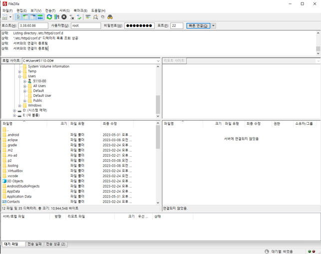
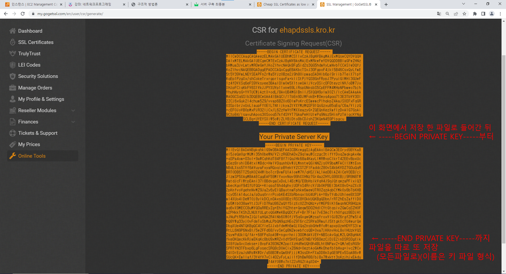
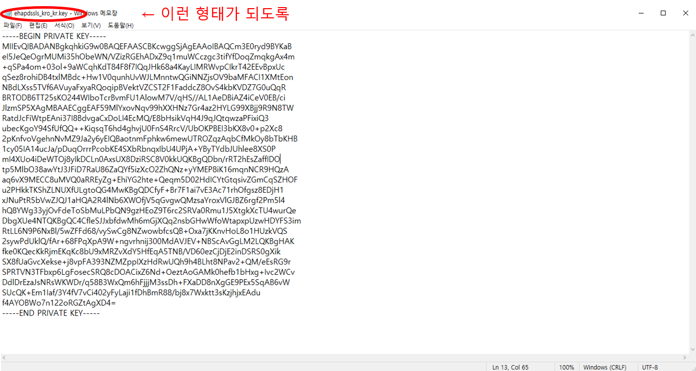
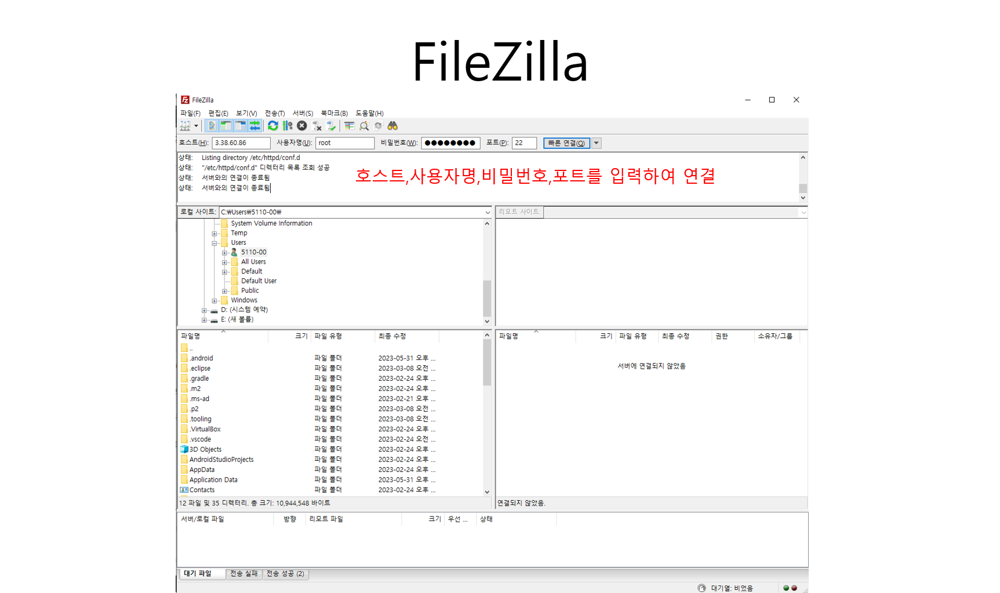
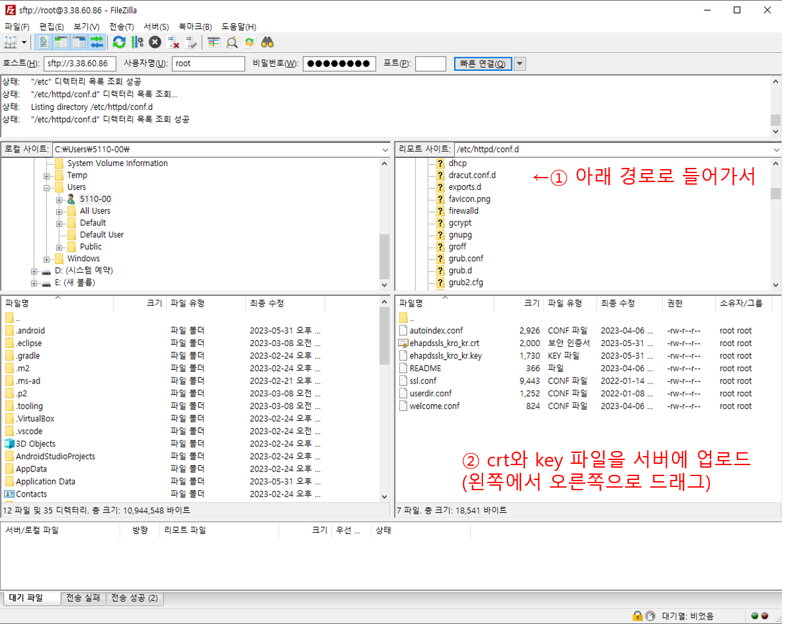
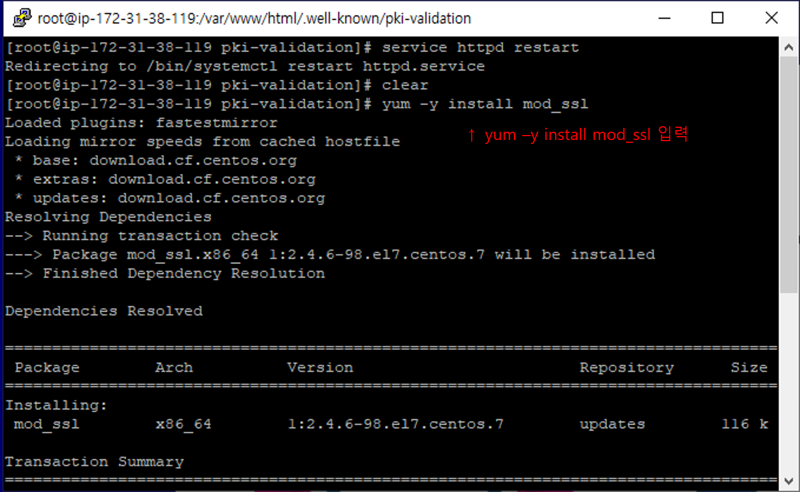
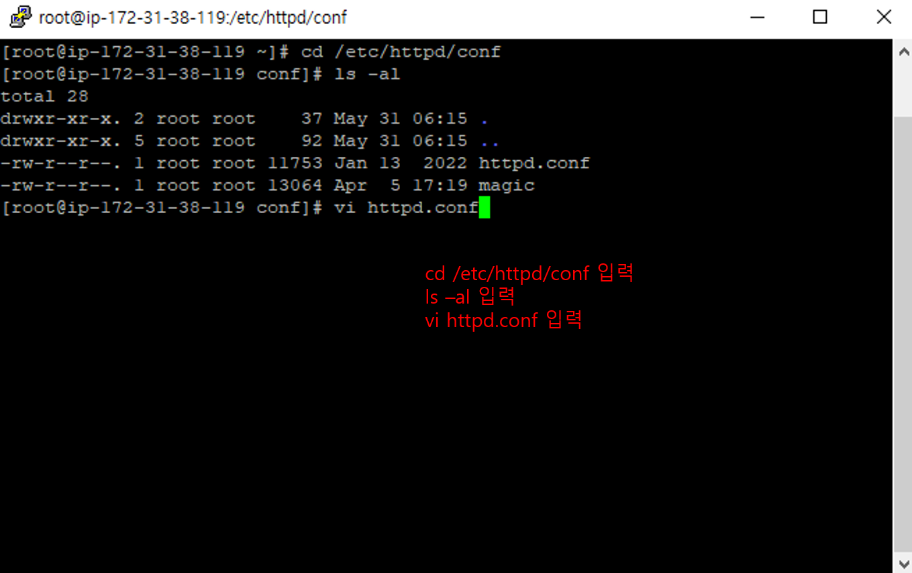
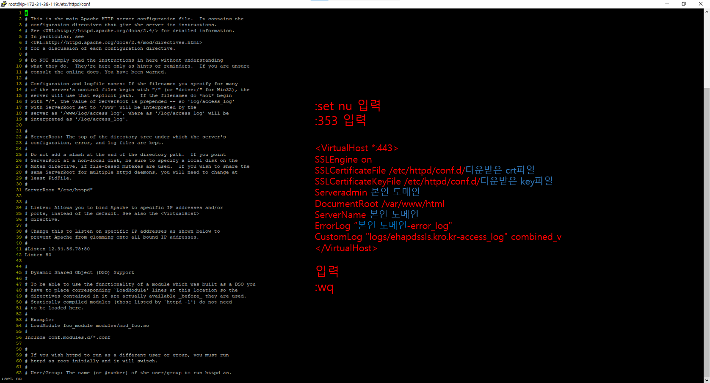
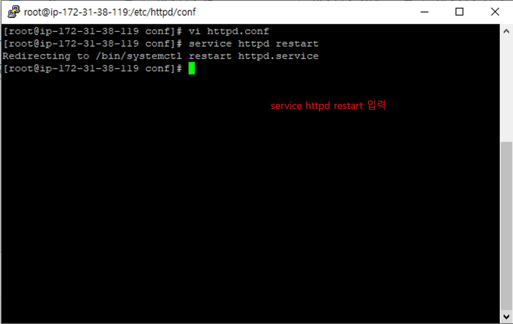
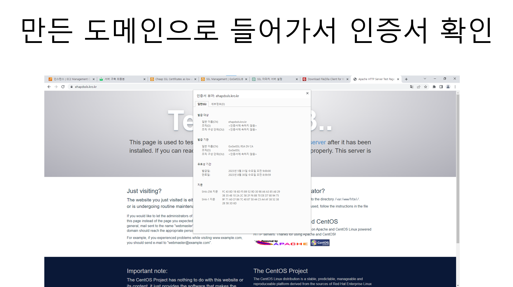

메인으로 돌아가기
1장. 웹 서버 생성
2장. 웹 서버 생성 및 아파치웹서버 설치,설정
3장. 도메인 등록 및 SSL 인증서 발급
4장. SSL 인증
5장. SSL 적용
5장. SSL 적용
아파치 서버에 SSL 적용
FileZilla부터 다운로드

호스트 : 탄력적 IP
사용자명 : root
비밀번호 : 설정하였던 root비밀번호
포트 : 22




/etc/httpd/conf.d 에 업로드를 해야지 SSL 인증서가 서버에 연결됩니다.





DPTS
메인으로 돌아가기